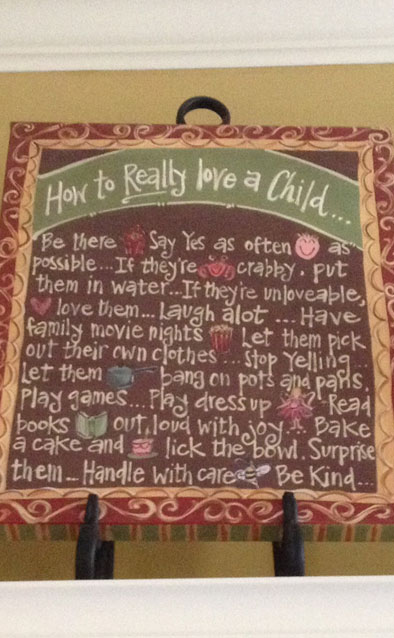
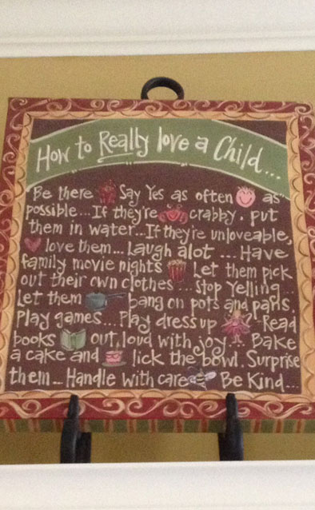
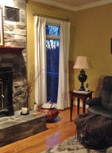
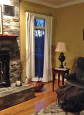
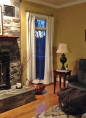
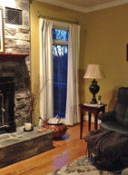

shannon
 

Thank you so much for my beautiful bed linens! I live in Lexington, Kentucky, which is known as horse country. We live on the Kentucky River Palisades which is mostly a wooded, rocky cliff area, but we drive past the beautiful horse farms to get to our home. I have included a photo of my bed makeover- I was so excited to show my husband how beautiful they are. Also included is my faithful dog, Ginger, under the front porch swing. Claire is wearing her pinafore and standing in front of her painting of Mom wearing her Rough Linen pinafore. She was quite surprised and delighted with her doll hidden away in her pocket! I keep a reminder of how I want to parent my kids in our family room because it does get quite hectic at our otherwise peaceful home and it is easy to lose sight of the more important things in life.


 



 
